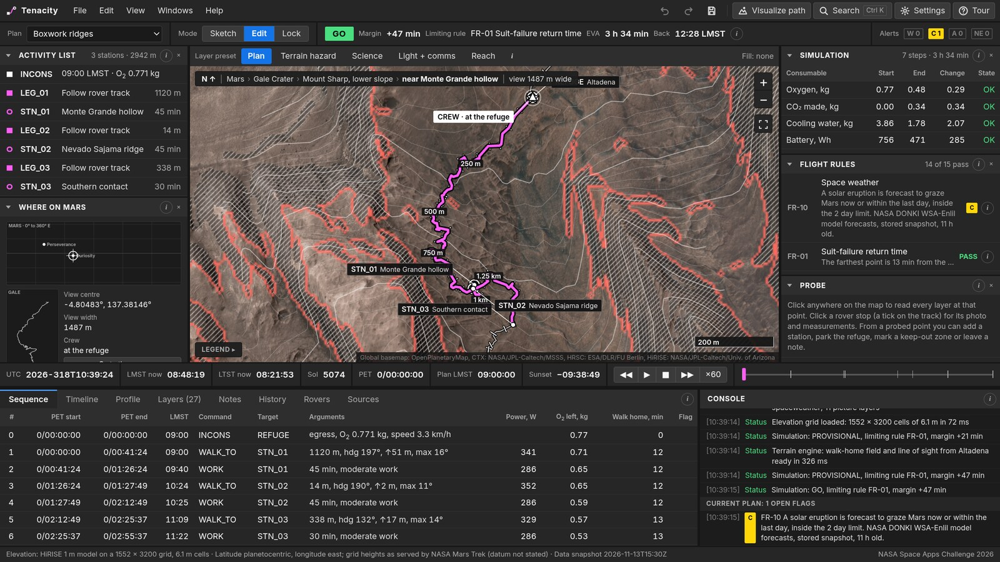
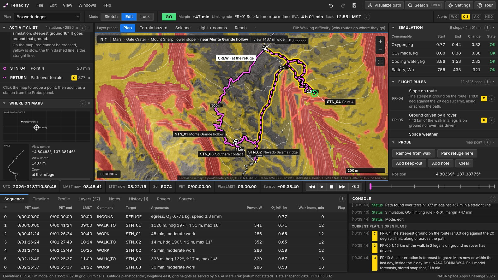
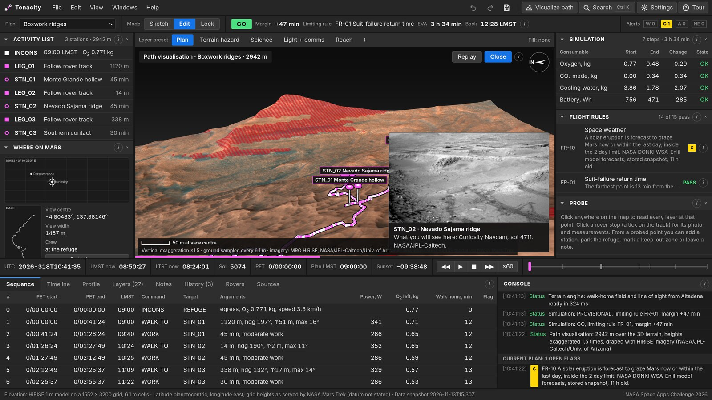

An EVA planner for walking on Mars: sketch the walk, simulate it, validate it, before the airlock opens.
Project Tenacity is a browser tool for planning a walk on Mars before taking it. It borrows the way NASA's rover drivers work at JPL (sketch a drive, simulate it, validate it against rules) and gives the same loop to astronauts on foot at Gale Crater.
The crew lays out a walk on real orbital imagery, or lets the tool find the easiest path over the terrain. Tenacity then simulates the walk step by step: time on every slope, oxygen, cooling water and battery, and how long it would take to get back to the refuge at any moment. Fifteen flight rules give one clear answer, GO or NO-GO, name the rule that decides, and show where on the map it bites.
More than 25 layers of NASA data (terrain, slope, shadow, minerals, subsurface water, rock chemistry, solar-storm forecasts and Curiosity's own photos of each stop) feed the same rules, so the map and the plan cannot disagree. A 3D flyover shows the ground before the crew walks it. Every number is labelled as measured, a NASA value, derived or assumed.
Why it matters. On Mars the limit of a walk is not distance. It is getting back to shelter in time: a suit's backup life support lasts about an hour. A map that only shows where things are cannot answer "can we go, and get home?". Tenacity answers exactly that, and shows its reasoning.

The map imagery and some photos load from NASA's public servers, so an internet connection is needed. The terrain engine takes a few seconds to load; until then the verdict reads PROVISIONAL.


| Rule | What is checked | Basis |
|---|---|---|
| FR-01 Suit-failure return | The refuge is always within 60 minutes at emergency pace | xEMU backup capability; Artemis III limits walking distance the same way |
| FR-02, 08, 09 Consumables | Oxygen, battery and cooling water cover the emergency walk home plus a 30 minute reserve | Apollo 15 planning memo; xEMU capacities; NASA BVAD |
| FR-03 Daylight | Back before sunset, with the reserve | Mars24 algorithm for the season at the refuge |
| FR-04 Slope | No ground steeper than 20°, up, down or across, at any point | Artemis suit requirement; HiRISE elevation model |
| FR-05, 06, 11 | Ground driven by a rover; line of sight to the refuge; loose ground | Curiosity track; elevation model; THEMIS thermal inertia |
| FR-07 Duration | No longer than 8 hours | Suit requirement |
| FR-10 Space weather | No solar eruption forecast to reach Mars within 2 days | NASA DONKI WSA-Enlil forecasts |
| FR-12, 13 | Keep-out zones; at least two crew | Set by the crew; NASA plans walks in pairs |
| FR-14, 15 | The plan still holds if walking is 1.375 times slower; flags walks that depend on the pace model where it is weakest | Apollo traverse average; our own check on the model |
A static web page: HTML, CSS and plain JavaScript modules, Leaflet for the 2D map and our own WebGL code for the 3D view. No server and no build step. The terrain engine runs in the browser in a web worker on a 5-million-cell elevation grid: slope, cast shadow for the time of day, line of sight to the refuge, a walk-home time field and least-time path finding. Data files are built from NASA's public services by Python scripts in the repository, so each can be regenerated. Plans, notes and the history of changes are stored in the browser (IndexedDB). 113 automated tests cover the simulation, the Mars clock, the terrain engine and the 3D mathematics.
The interface follows NASA's display standard for alert colours (red warning, yellow caution, blue advisory, cyan stale or missing data) and is laid out as a workstation: resizable docks, a guided tour, search, information buttons that explain every term with links, and a large mode for gloved hands.
| Working now (in the live tool) | Details |
|---|---|
| Planning | Ready-made walks; sketching stations anywhere; three ways to walk a leg; keep-out zones; movable refuge (a pressurised rover); crew size |
| Simulation and rules | Step-by-step simulation; 15 flight rules; GO / NO-GO / PROVISIONAL / NOT EVALUATED; playback on the Mars clock; printable cuff card |
| Terrain engine | Slope, roughness, sun shading and cast shadow at the plan time, line of sight, walk-home time, path finding, "why this path" explanation |
| Data layers | More than 25 layers with presets; probe that reads every layer at a point; source link and explanation for each layer |
| 3D | Flyover of the route over real terrain and imagery, with rover photos of the stations |
| Workstation | Guided tour, search, settings, resizable and hideable panels, saved plans, history with restore, undo and redo, notes on the map, export and import |
| Resource | How it is used |
|---|---|
| Curiosity Location Map (NASA/JPL-Caltech) | The rover's 38.8 km track and 1,388 stop positions with elevation and tilt (sols 3 to 5070): the "proven ground" of the planner. HiRISE 25 cm and CTX map tiles for the base map and the 3D drape. |
| NASA Mars Trek: MRO HiRISE 1 m elevation model of Gale | Resampled to a 6 m grid (1552 × 3200 cells). Source of slope, relief lines, shadow, line of sight, walk-home time, path finding and the 3D terrain. |
| Curiosity raw images | Navcam view at each rover stop, chosen to look along the track: what the crew will see on arrival. |
| NASA PDS Geosciences Node: CheMin, APXS, ChemCam | Minerals of 48 drilled and scooped samples; chemistry of 1,784 spots; names of 4,393 laser targets; each placed at the rover stop where it was measured and shown in the probe. |
| MRO CRISM (NASA PDS) | Map-projected mineral indicator maps (hydrated minerals, clays, iron minerals), 18 m, aligned to the base map. |
| Mars Odyssey THEMIS (via ASU JMARS) | Thermal inertia and night infrared, 100 m: where the ground is likely loose sand or dust (rule FR-11). |
| NASA DONKI | WSA-Enlil forecasts of solar eruptions reaching Mars (rule FR-10), read live with a stored fallback. |
| NASA GISS Mars24 algorithm | Mars local mean and true solar time, season, Sun position, sunrise and sunset. |
| Curiosity's Proposed Path up Mount Sharp | The named science regions and their colours; placed on the real track from published sol ranges. |
| NASA documents: BVAD Rev 2, xEMU life support, Artemis III surface requirements, NASA-STD-3001 Vol 2 | The constants of the simulation (oxygen per unit of effort, suit capacities, the 60 minute return limit, the 20° slope limit, the 8 hour limit) and the colour and alert conventions of the interface. |
| JPL RSVP rover planning tools; JSC Crew Interfaces | The working method (sketch, simulate, validate) and the layout of the interface. |
| Resource | How it is used; licence or credit |
|---|---|
| DAN water and chlorine along Curiosity's traverse | Subsurface water layer and probe read-out. Nikiforov, Djachkova and Lisov (2022), CC BY 4.0. The DAN instrument was contributed by Roscosmos. |
| Partner instruments on Curiosity | APXS was provided by the Canadian Space Agency; ChemCam was built with the French space agency CNES. Their data are used through NASA's PDS (see section 4). |
| ESA Mars Express HRSC | Regional base map around Jezero, as served in NASA's Perseverance map. Credit ESA/DLR/FU Berlin. |
| USGS Geologic Map of Mars, SIM 3292 | Geologic unit at a point (1:20,000,000; stated as too coarse for a single walk). Tanaka and others, 2014. |
| OpenPlanetaryMap | Whole-planet base map when zoomed out. |
| SEXTANT / pextant (MIT, NASA) | The walking-speed-against-slope function, re-implemented; and Santee et al. 2001 for metabolic cost. |
| Leaflet 1.9.4; Inter typeface | Map library (BSD-2-Clause) and bundled fallback font (SIL Open Font License). |
All screenshots in this document are of the team's own tool. Map imagery in them: NASA/JPL-Caltech/University of Arizona/MSSS. No NASA logos or mission emblems are used. Not affiliated with or endorsed by NASA.
Tool used: Claude, an AI coding assistant by Anthropic.
What it was used for, and which parts are affected:
What the team did: chose the challenge, set the concept (a rover-planner-style tool for astronauts) and the requirements, directed the design, and reviewed and tested the result.
Not used: no AI-generated images, video or audio are part of the project. All pictures are screenshots of the working tool or NASA imagery inside it.